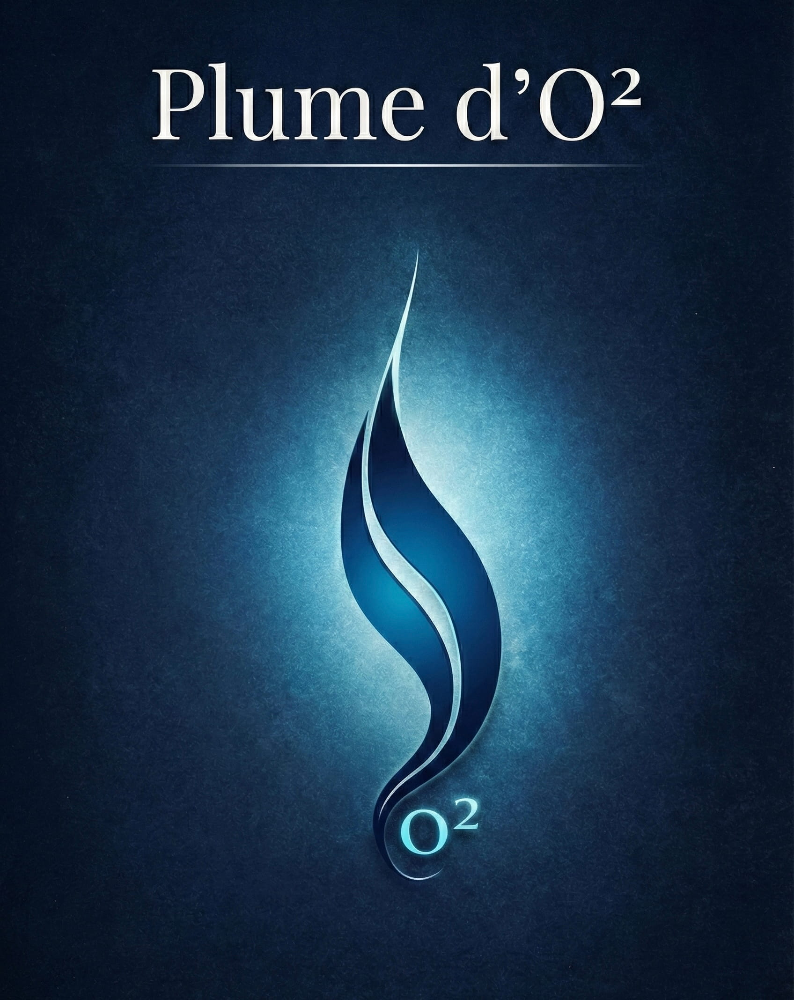

Notre histoire
Pourquoi Plume d'O² ?
Une Plume, Mille Récitations, une Harmonie.
Respirez. Écoutez. Méditez. Apaisez-vous.
O² comme Orient et Occident.
La parole divine n'a pas de frontières. Elle voyage des cœurs de l'Est vers ceux de l'Ouest, traversant les langues, les cultures et les siècles sans jamais s'épuiser.
Plume d'O² se veut un pont entre ces deux mondes — une voix qui puise dans la tradition orientale pour la faire résonner jusqu'au cœur de l'Occident.
O² comme Oxygène.
Une nourriture pour l'âme. Un souffle vital dans un monde qui étouffe.
Dans un quotidien saturé de bruit, de vitesse et de superficialité, Plume d'O² est une respiration. Chaque récitation, chaque méditation est conçue pour créer un espace de silence intérieur — là où le cœur peut enfin se poser et s'élever.
Un sanctuaire pour l'âme.
Plume d'O² n'est pas simplement un label audio. C'est un sanctuaire numérique — une respiration nécessaire pour quiconque cherche à se reconnecter à l'Éternel dans le tumulte du monde.
À travers des récitations apaisantes, et réflexions profondes sur le coran, nous allions la pureté du son à la beauté visuelle pour créer une expérience immersive qui nourrit l'intellect et apaise le cœur.
Notre objectif est de vous accompagner sur le chemin de l'introspection et de la paix intérieure — que vous soyez à l'aube ou au crépuscule de votre journée, dans la mosquée ou dans le métro.
En hommage à Ustadha Najat Bouyaala
La créatrice du concept Plume d'O²
Le nom Plume d'O² ne m'appartient pas — il m'a été transmis. C'est Ustadha Najat Boyaala, professeure d'exception et femme de lettres, qui a fait naître ce concept avant moi. Une plume qui traverse les deux horizons, une voix qui nourrit comme l'oxygène nourrit le corps.
En créant ce label de récitation coranique, j'ai souhaité lui rendre hommage à ma façon — perpétuer ce qu'elle a semé, et porter encore plus loin cette vision d'une parole divine accessible à tous, d'Orient en Occident.
Que Allah la récompense au centuple pour tout ce qu'elle a transmis.
— En hommage à Ustadha Najat Bouyaala

Jeune étudiant et apprenant en langue arabe, mon ambition est de partager le bien autour de moi et de donner de l'amour aux gens. L'apprentissage et la mémorisation des invocations m'ont procuré un bien-être incroyable — un trésor que j'ai voulu mettre à la portée de tous.
Plume d'O² est né de cette conviction simple : la parole d'Allah est la meilleure des paroles, et elle mérite d'être entendue par le plus grand nombre, avec le plus grand soin.